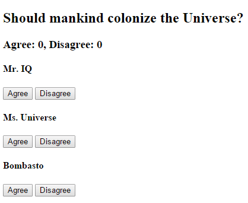

AngularJS
Una introducció
Creat per en Ramon Vilar d'Ymbra
Introducció
AngularJS és un framework JS per a crear interfícies d'aplicaciones riques creat per Google.
Es basa en una arquitectura MVC i seguint OOP.
Conceptes bàsics
Classes
ES6 introdueix el conceptes de classe típic de qualsevol llenguatge de programació OO.
class Polygon {
constructor(height, width) {
this.height = height;
this.width = width;
}
}Mòduls
ES6 introdueix també el concepte de mòdul nadiu (ja fa anys que es venen usant a través de tècniques JS).
La diferència principal és que usen de forma automàtica el mode estricte ("use strict";) i que tot el que es declari en un mòdul és local en aquest.
Cal importar i exportar tot.
Mòduls
// foo.js
export function detectFoo(zone, options) {
// My code.
}// bar.js
import {detectFoo} from "foo.js";
function go() {
var foo = detectFoo(canvas);
// ...
}TypeScript
AngularJS està escrit (i usa) TypeScript
És un llenguatge de programació desenvolupat per Microsoft.
És un superconjunt de JavaScript que afegeix, entre d'altres, tipatge estàtic i objectes basats en classes.
Anotacions
Una anotació és una "funció" que afegeix informació a una funció, una variable o una classe.
class Example {
a() {}
@readonly
b() {}
}Angular CLI
És una interfície per línia de comandes per Angular.
Ens facilita moltes operaciones diàries amb Angular tot estalviant-nos temps.
Per instal·lar és tan fàcil com:
npm install -g @angular/cliCrear una aplicació
Podem crear una aplicació Angular i servir-la des del nostre ordinador fent.
ng new my-app
cd my-app
ng serveGenerar codi
Angular CLI ens proporciona una comanda per a poder crear fàcilment diversos elements.
// Generates a component.
ng generate component MyComponent
// Generates a service.
ng generate service MyServiceAnatomia d'una aplicació
Anem a crear la nostra primera aplicació Angular
Anem a un directori de treball i executem el següent:
ng new my-app
cd my-app
ng serve --openAnem al navegador que se'ns ha obert a http://localhost:4200/
Modificació automàtica
Accedim a /src/app/app.component.ts i podem provar de canviar el títol.
Proveu de canviar també els estils a /src/app/app.component.css
Fitxers d'una aplicació
Anem a revisar tots els fitxers que formen part de l'aplicació.
Exercicis
- Proveu d'afegir HTML al component de l'aplicació
- Proveu d'afegir una nova propietat a l'aplicació i mostrar-la
Arquitectura

Mòduls
Una aplicació Angular és modular per definició i està formada per 1 o N mòduls.
Cada aplicació té com a mínim un mòdul NgModule, el mòdul root (sovint AppModule).
@NgModule({
declarations: [
...
],
imports: [
...
],
bootstrap: [AppComponent]
})
export class AppModule { }Biblioteques
Angular ens proporciona una sèrie de biblioteques que podem fer servir a les nostres aplicacions.
Podem identificar una biblioteca d'angular perquè ve precedida del prefix @angular
import { Component } from '@angular/core';Components
Un component controla una porció de la pantlla que anomenarem vista.
La lògica d'un component la definirem sempre dins d'una classe.
Angular crea, actualitza i destrueix components a mesura que l'usuari es mou per l'aplicació
Components
export class ShoppingListComponent implements OnInit {
lineItems: LineItem[];
constructor(private service: LineItemService) { }
ngOnInit() {
this.lineItems = this.service.getLineItems();
}
}Plantilles
Per definir la vista d'un component usem una plantilla.
Les plantilles estan desenvolupades amb HTML i usen bindings d'Angular per a poder interactuar amb la informació.
<h2>Hero List</h2>
<p><i>Pick a hero from the list</i></p>
<ul>
<li *ngFor="let hero of heroes" (click)="selectHero(hero)">
{{hero.name}}
</li>
</ul>Metadades
Les metadades ajuden a Angular a saber com ha de processar una classe.
Les metadades es passen a través d'anotacions com per exemple: @Component, @Input o @Output.
@Component({
selector: 'app-hero-list',
templateUrl: './hero-list.component.html',
providers: [ HeroService ]
})
export class HeroListComponent implements OnInit {
/* . . . */
}Serveis
Un servei és qualsevol classe que proporciona una funcionalitat o dades, de forma concisa i precisa.
El concepte de servei no és propi d'Angular, però s'usa molt sovvint per a organitzar les aplicacions per tal de que siguin fàcilment mantenibles.
Angular es basa en el patró d'injecció de dependències.
constructor(private service: HeroService) { }Plantilles
Les plantilles es construeixen amb HTML normal i corrent.
Per motius de seguretat l'element <script> no està permés en una plantilla. En cas de trobar-lo, s'ignorarà.
Interpolació
Per a mostrar un valor en una plantilla s'usa {{ }}
<a href="{{url}}">Hi {{user.name}}. How are you?.</a>Les expressions usades poden referir-se a propietats del context de la plantilla.
Pipes
El resultat d'una expressió es pot transformar abans de mostrar-se en una plantilla amb una pipe.
<h2>{{title | uppercase}}</h2>I fins i tot podent tenir paràmetres
<p>Birthdate: {{birthdate | date:'longDate'}}</p>NgForOf
Serveix per a presentar una llista de valors en una plantilla
<div *ngFor="let hero of heroes; let i=index;">
({{i}}) {{hero.name}}
</div>A més a més de l'índex, permet obtenir altres valors del bucle com booleans indicant si és el primer o el darrer valor, o si és un valor parell o senar.
NgIf
Es pot afegir o eliminar un element al DOM aplicant aquesta directiva a un element.
<div *ngIf="heroes.length > 3">
There is a lot of heroes!
</div>No confonguem eliminar amb amagar!
Exercici - Shopping list
Modifiqueu la vostra aplicació de prova per tal de tenir la següent estructura
- Una classe que representi un element d'una llista de compra
LineItemamb dues propietats: id, name - El vostre component ha de crear una
ShoppingList: LineItem[] - Creeu contingut de prova i mostreu-lo a la plantilla
Data Binding
És el mecanisme per a coordinar el que veu l'usuari amb els valors de l'aplicació.
Nosaltres declarem la unió de valors i el framework fa la feina per a comunicar aquesta informació entre ells mateixos.
N'hi ha principalment de tres tipus.
Important
Amb aquests mètodes no establim valors als atributs de l'HTML, si no que treballem amb propietats.
<button [disabled]="isUnchanged">Save</button>No estem treballant amb l'atribut disabled si no que amb la seva propietat!
Property binding
Enllaça una propietat d'un element a una propietat d'un component.
<img [src]="myImageUrl">
<img bind-src="myImageUrl">Ara si canvia la propietat del component myImageUrl canviarà de forma automàtica a l'HTML.
Atributs, classes i estils
Per poder establir valors a atributs (aria, svgs i span de taules) s'ha d'usar
<button [attr.aria-label]="actionName">{{actionName}} with Aria</button>Per a establir valors de classes:
<div [class.special]="isSpecial">The class binding is special</div>Per a més opcions, podeu mirar la directiva NgClass
Atributs, classes i estils
Per a poder establir valors d'estils:
<button [style.color]="isSpecial ? 'red': 'green'">Red</button>Per a establir valors amb unitats:
<button [style.font-size.em]="isSpecial ? 3 : 1" >Big</button>Per a més opcions, podeu mirar la directiva NgStyle
Event binding
S'utilitza per a establir valors des d'un element a un component.
<button (click)="onSave()">Save</button>
<button on-click="onSave()">Save</button>En fer clic al botó, es crida al mètode del component.
Two-way binding
Aquest és el darrer dels casos: quan volem mostrar un valor a la vegada que l'estem modificant la propietat.
Un cas especial és l'ús en formularis amb NgModel (cal importar FormsModule).
<input [(ngModel)]="currentHero.name">Exercici
Agafem la llista de la compra d'abans i afegim les següents opcions.
- Un botó per esborrar tota la llista de la compra
- Al fer clic en un element, es mostra un input per a poder modificar el nom de l'element de la compra i es modifica a mesura que escric
Comunicació entre components
No es pot accedir a propietats o mètodes d'un altre component (només té accés al seu context públic).
I què fem si jo vull passar un element d'un component a un altre de diferent? Per exemple des d'un llistat a un detall? I si vull reaccionar a un esdeveniment?
Entren en joc les annotacions @Input i @Output
@Input
En cas de voler "passar" un valor d'un component pare a un componet fill podem fer una cosa del tipus:
<app-list-detail [listItem]="selectedListItem"></app-list-detail>Però si fem directament això el compilador ens donarà un missatge de violació d'accés
@Input
Cal definir la variable com a element d'entrada.
@Input() listItem: ListItem;Amb això fem que el valor de selectedListItem es vinculi amb la propietat listItem del component ListDetailComponent.
@Output
En canvi, si el que volem és que un valor d'un component fill pugi cap al pare, farem servir una cosa així.
<app-list-detail (deleteExecuted)="deleteItem($event)"></app-list-detail>Igualment si fem directament això el compilador ens donarà un missatge de violació.
@Output
Cal definir el mètode com a element de sortida.
@Output() deleteExecuted = new EventEmitter<ListItem>();Amb això fem que la propietat deleteExecuted pugui emetre un esdeveniment informant del LineItem eliminat i que un altre component pugui reaccionar-hi.
Exemple
Exemple
import { Component, EventEmitter, Input, Output } from '@angular/core';
@Component({
selector: 'app-voter',
template: `
<h4>{{name}}</h4>
<button (click)="vote(true)" [disabled]="voted">Agree</button>
<button (click)="vote(false)" [disabled]="voted">Disagree</button>
`
})
export class VoterComponent {
@Input() name: string;
@Output() onVoted = new EventEmitter<boolean>();
voted = false;
vote(agreed: boolean) {
this.onVoted.emit(agreed);
this.voted = true;
}
}Exemple
import { Component } from '@angular/core';
@Component({
selector: 'app-vote-taker',
template: `
<h2>Should mankind colonize the Universe?</h2>
<h3>Agree: {{agreed}}, Disagree: {{disagreed}}</h3>
<app-voter *ngFor="let voter of voters"
[name]="voter"
(onVoted)="onVoted($event)">
</app-voter>
`
})
export class VoteTakerComponent {
agreed = 0;
disagreed = 0;
voters = ['Mr. IQ', 'Ms. Universe', 'Bombasto'];
onVoted(agreed: boolean) {
agreed ? this.agreed++ : this.disagreed++;
}
}Variable de referència en una plantilla
Podem crear una referència a un element fent servir la sintaxis #var
<input #phone placeholder="phone number">I usar-la més endavant allà on ens interessi.
<button (click)="callPhone(phone.value)">Call</button>Exemple
Les variables poden referenciar a un component, i per tant, en una plantilla podem fer una cosa com aquesta.
<h3>Countdown</h3>
<button (click)="timer.start()">Start</button>
<button (click)="timer.stop()">Stop</button>
<div class="seconds">{{timer.seconds}}</div>
<app-countdown-timer #timer></app-countdown-timer>Exercici
Seguint amb l'exemple de la ShoppingList, dividim l'aplicació en dos components, de tal forma que tinguem un component per al llistat i un altre de diferent per al detall/formulari de modificació de valors.
Routing
Sovint a les nostres aplicacions voldrem que les vistes siguin accessibles a través de certs URLs.
A Angular treballarem amb el concepte Routes.
Tot i que ho podem declarar a l'aplicació general, es recomana la creació d'un mòdul específic.
Classe base
Podem usar una classe base com la següent:
import { NgModule } from '@angular/core';
import { RouterModule, Routes } from '@angular/router';
@NgModule({
exports: [ RouterModule ]
})
export class AppRoutingModule {}Definició d'una ruta
Per definir rutes hem de fer:
const routes: Routes = [
{ path: 'heroes', component: HeroesComponent }
];I afegir-ho a @NgModule.imports:
imports: [ RouterModule.forRoot(routes) ],Modificació de l'aplicació
Ara cal obrir la nostra AppComponent per exemple i afegir:
<h1>{{title}}</h1>
<nav>
<a routerLink="/heroes">Heroes</a>
</nav>
<router-outlet></router-outlet>Ara dins de <router-outlet> es mostrarà el component definit per la ruta
Rutes per defecte
Podem definir una ruta per defecte perquè hi navegui sempre quan anem a l'arrel de l'aplicació.
{ path: '', redirectTo: '/dashboard', pathMatch: 'full' }Rutes comodí
Ens pot interessar interceptar qualsevol ruta que no estigui definida per, per exemple, enviar-la a la típica pàgina 404.
{ path: '**', component: PageNotFoundComponent }Rutes amb paràmetres
Hi ha certes pàgines que ens pot interessar accedir-hi via una adreça amb paràmetres, del tipus /detail/23. Per fer-ho podem declarar:
{ path: 'detail/:id', component: HeroDetailComponent }Ús de paràmetres de l'URL
Si volem a més a més, obtenir el valor de l'URL per a poder mostrar aquell valor específic, caldrà injectar un servei al constructor del component amb el que treballem.
constructor(private route: ActivatedRoute) {}Ús de paràmetres de l'URL
Allà on vulguem usar el valor, el podem obtenir del paràmetre de l'URL fent:
const id = this.route.snapshot.paramMap.get('id');Cal tenir present que tots els paràmetres obtinguts de l'URL són strings. Si volem usar com a nombre, caldrà transformar-lo.
Exercici
Anem a transformarla nostra aplicació de la llista de la compra per tal de poder ser accessible via /shopping-list i el seu detall mitjançant /list-item/<id>
Extra: afegiu opcions per a poder tenir una pàgina d'error.
Formularis
Existeixen dues formes diferents de poder crear formularis a Angular:
- Template-driven Forms
- Reactive Forms
Template-driven Forms
Es basa en la directiva ngModel que ja coneixem.
Tota la lògica del formulari es defineix a la plantilla (mapping, validacions, etc.).
Addient per a petits formularis però ràpidament es queda curt.
Exemple
<form #form="ngForm" (ngSubmit)="onSubmit()">
<p>
<label>First Name:</label>
<input type="text" [(ngModel)]="user.firstName" name="firstName" required>
</p>
<p>
<label>Last Name:</label>
<input type="text" [(ngModel)]="user.LastName" name="lastName" required>
</p>
<p>
<button type="submit" [disabled]="!f.valid">Submit</button>
</p>
</form>Exemple
En aquest cas, gràcies al two-way binding la nostra funció de submit pot quedar ben senzilla.
onSubmit() {
console.log(this.user);
this.user.save();
}Notes
En cas de no voler two-way binding, podem només usar en una direcció [ngModel] i fer:
<form #form="ngForm" (ngSubmit)="onSubmit(form)">onSubmit({value}) {
this.user.firstName = value.firstName;
this.user.lastName = value.lastName;
this.user.save();
}Desavantatges
Si anem afegint lògica al formulari, validacions, etc. aquests es torna difícil de llegir i de mantenir. A més, no podem fer proves unitàries del formularis!
Imaginem-nos que necessitem fer validacions dependents d'un altre camp, com per exemple, comprovar que dos camps tenen el mateix valor.
Es necessita una versió més avançada de declaració de formularis.
Reactive Forms
També anomenats Model driven és una forma de definir formularis des de codi, tot fent independent la seva modulació HTML de la seva modulació en codi.
Es basa en el mòdul ReactiveFormsModule
import {ReactiveFormsModule} from "@angular/forms";Exemple
<form [formGroup]="userForm" (ngSubmit)="onSubmit()">
<p>
<label>First Name:</label>
<input type="text" formControlName="firstName">
</p>
<p>
<label>Last Name:</label>
<input type="text" formControlName="lastName">
</p>
<p>
<button type="submit" [disabled]="!f.valid">Submit</button>
</p>
</form>Agnòstic
Si ens fixem, ara tenim una directiva formGroup associada a una variable anomenada userForm
Ara la nostra plantilla no té informació sobre validacions. Aquestes residiran al controlador, el qual pot ser provat unitàriament.
Exemple
El nostre controlador tindrà la següent pinta.
export class UserFormComponent {
userForm: FormGroup;
constructor(private fb: FormBuilder) {
this.createForm();
}
createForm() {
this.userForm = this.fb.group({
firstName: ['', Validators.required ],
lastName: ['', Validators.required ]
});
}
onSubmit() {
// Show formModel.
console.log(this.userForm.value);
}
}Avantatges
Això ens permet poder tenir el model completament independent del formulari (formularis parcials).
A més, se'ns obre la possibilitat de poder aplicar programació reactiva.
Establir valors del formulari
Podem establir tots els valors d'un formulari amb setValue.
this.form.setValue({
firstName: this.user.firstName,
lastName: this.user.lastName
});this.form.setValue(user);Establir valors del formulari
Però també podem especificar només valors per part dels elements amb patchValue.
this.form.patchValue({
firstName: this.user.firstName
});this.form.setValue(user);Bonus: reset d'un formulari
Podem esborrar tots els camps (i estat) d'un formulari fent servir la funció reset()
this.form.reset();Exercici
Afegim un formulari al shoppingList per tal de poder afegir nous elements a la llista
Ampliem el model de dades per a especificar nom de l'element (obligatori) i quantitat, per defecte 1.
Usar reactive forms.
Consumir serveis REST
Per a fer-ho farem servir un servei anomenat HttpClient disponible mitjançant HttpClientModule.
Hem d'injectar el servei al nostre component per tal de poder-lo fer servir.
constructor(private http: HttpClient) {}HttpClient
Usa l'objecte XMLHttpRequest propi dels navegadors per a poder fer peticions dels següents tipus:
- get
- post
- put
- delete
- patch
- head
- jsonp
Consultar dades
Per a llançar una petició de consulta, només cal cridar al mètode get() de l'objecte i subscriure'ns-hi.
this.http.get(url).subscribe(data => {
console.log(data);
});Tècnicament, qui executa la petició és la crida a subscribe(). Sense això, no s'executaria.
Resposta
Aquesta crida retornaria a data un anònim Object, imaginem-nos, amb diverses propietats, entre les quals, name i surname.
Només podríem accedir als seus valors fent: data['name'] o data['surname'].
Però el que de debò ens agradaria és poder accedir mitjançant la notació del punt data.name o data.surname.
Resposta
El que podem fer és, per exemple, fer cast de la resposta a un tipus que disposi de les propietats corresponents.
Per això, podem definir una interface amb les propietats que ens interessi:
interface UserResponse {
name: string,
surname: string
}Resposta
Ara ja podem fer cast en la resposta de la petició:
this.http.get<UserResponse>(url).subscribe(data => {
console.log('User name: ' + data.name);
console.log('User surname: ' + data.surname);
});Gestió dels errors
this.http.get<UserResponse>(url).subscribe(
data => {
console.log('User name: ' + data.name);
console.log('User surname: ' + data.surname);
},
err => {
console.log('Error occurred.');
}
);Si volem accedir a més informació de l'error, podem definir el paràmetre com de tipus:
(err: HttpErrorResponse)Fer un post a servidor
const req = this.http.post(url, data)
.subscribe(
res => {
console.log(res);
},
err => {
console.log("Error occured");
}
);Exercici
Usant https://jsonplaceholder.typicode.com/, anem a construir una aplicació que consulti l'endpoint /posts i llisti la seva resposta.
Una vegada fet això, fem un formulari amb dos camps, title i body, i al fer clic a un botó, envïi els valors a /posts amb userId = 2.